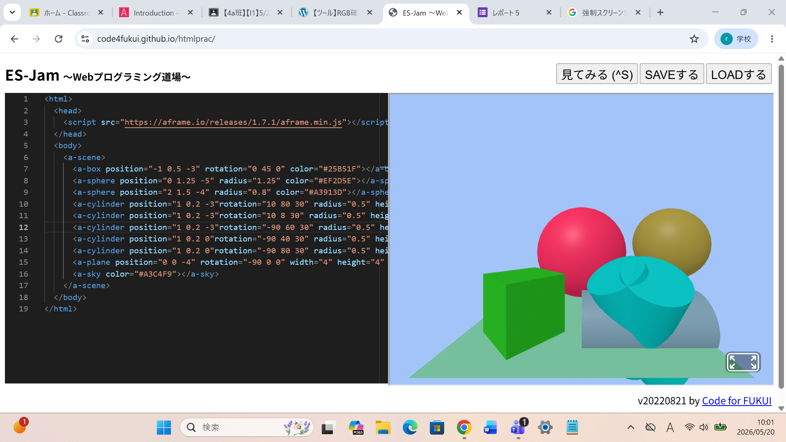

第3週目
3-1 JavaScript体験：VR空間を作る

自作した３次元空間
1.内容
学習した内容を説明する文章を
自分で考えて作成する（50文字以上．100文字程度を推奨．※生成AIを使ってはいけない）
JavaScript言語は、英語の略で、はじめからある程度理解することができた。また、
プログラミングのつくりや言語も学習することができた。
2.感想
学習した内容を実践したときに自分が感じた感想を
自分で考えた文章で作成する（50文字以上．100文字程度を推奨．※生成AIを使ってはいけない）
立体図形の位置や大きさなどどう変わるのかを予測するのが楽しかった。
数学で勉強す座標は、こういうともに利用されているということを改めて実感できた。
1.内容
学習した内容を説明する文章を
自分で考えて作成する（50文字以上．100文字程度を推奨．※生成AIを使ってはいけない）
ユーザーの使い方を予測し、それを事前に防いでおくということが重要であると学んだ。さらに、
見やすくするために行をそろえたりするくふうも学ぶことができた。
2.感想
学習した内容を実践したときに自分が感じた感想を
自分で考えた文章で作成する（50文字以上．100文字程度を推奨．※生成AIを使ってはいけない）
思った通りに動かすだけでも、かなり大変だった。しかし、今までにない体験で楽しかった。
"とりあえずとりあえず動くものを作る"ではなく、ユーザーによる"想定外の使い方"にも対応する必要がある
ことをしり、もっと勉強していきたいなと思った。